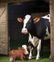

Дядя Фёдор, пёс и кот - продолжение 9. Телёнок

Дядя Фёдор, пёс и кот - продолжение 9. Телёнок.
Эдуард Успенский
#советская_классика
С тех пор как Матроскин в подполе жил, жизнь дяди Фёдора усложнилась. Мурку в поле выгонять — дяде Фёдору. В магазин идти — дяде Фёдору. К колодцу за водой тоже дядя Фёдор идёт. А раньше всё это кот делал. От Шарика тоже толку мало было. Потому что ему фоторужьё купили. Он с утра в лес и полдня за зайцем носится, чтобы сфотографировать. А потом снова полдня за ним гоняется, чтобы фотографию отдать.
А тут опять событие. Утром, когда они ещё спали, кто-то в дверь постучал. Матроскин перепугался страшно — не профессор ли это пришёл его забирать. И прямо с печки в подпол — прыг! (Он теперь подпол всегда открытым держал. А там окошко было маленькое, чтобы огородами, огородами и прямо в лес.) Дядя Фёдор с кровати спрашивает:
— Кто там?
А это Шарик:
— Здрасте пожалуйста! У нашей коровы телёнок родился!
Продолжение здесь